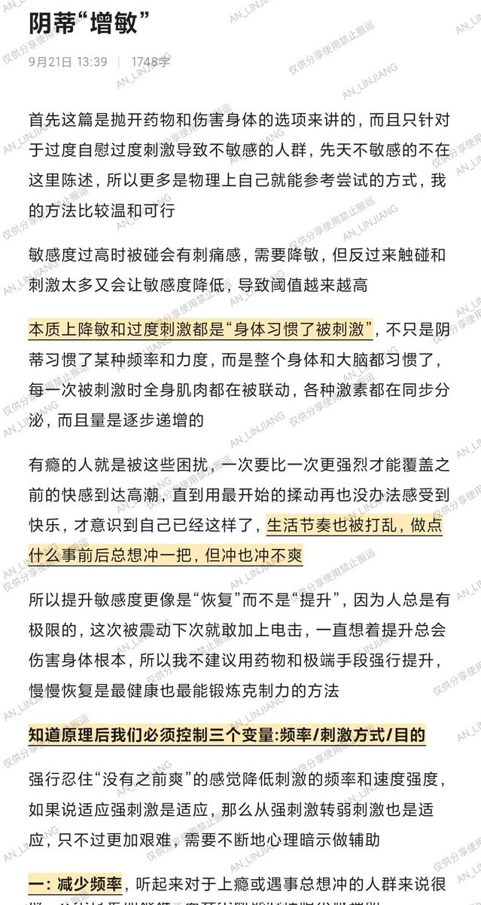
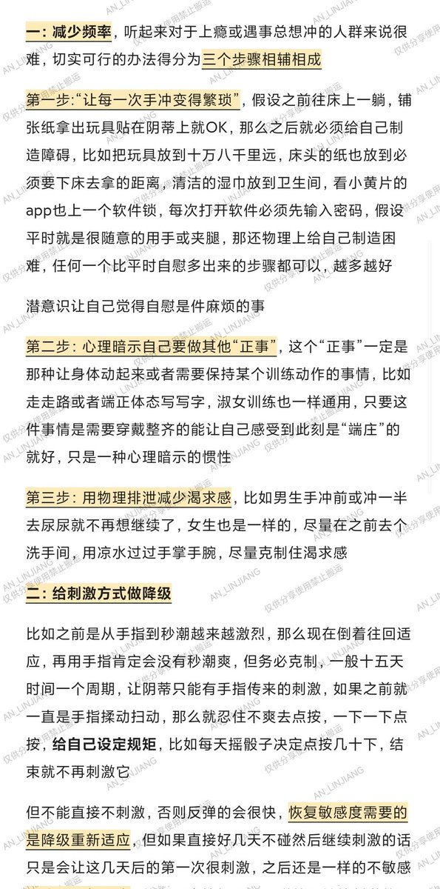
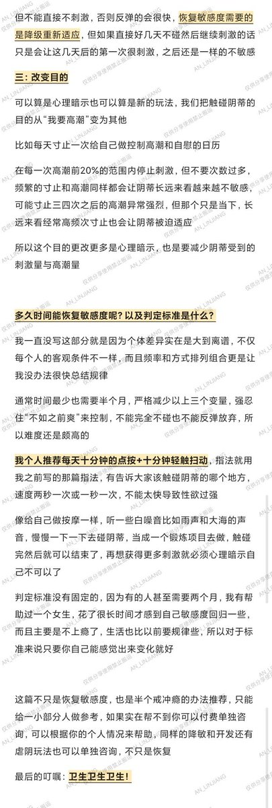

@Numiouoo 正好最近看到一个帖子，希望能有帮助🥹




补档「控制手冲上瘾」与「提高阴蒂敏感度」🌙
好多小伙伴过度自慰身体变差，偶尔情绪管理失控，被影响专注力记忆力，女生虽然高潮“CD”短但也是会肾亏的
有的体质会因为「太频繁导致不敏感了」，但有的不会，请尊重个体差异哦
性欲强烈不该成为被凝视取乐的由头，谁都有权取悦自己，健康适度就好🙌 https://t.co/0zlzjqW0cO https://t.co/zlRcTRzXHx
好多小伙伴过度自慰身体变差，偶尔情绪管理失控，被影响专注力记忆力，女生虽然高潮“CD”短但也是会肾亏的
有的体质会因为「太频繁导致不敏感了」，但有的不会，请尊重个体差异哦
性欲强烈不该成为被凝视取乐的由头，谁都有权取悦自己，健康适度就好🙌 https://t.co/0zlzjqW0cO https://t.co/zlRcTRzXHx